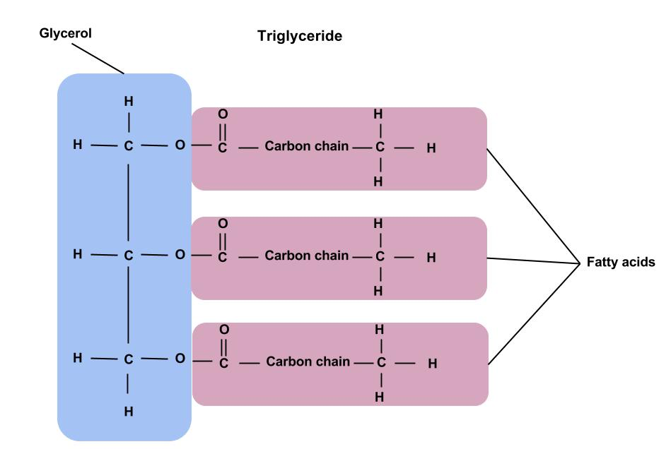

Introduction
A new discovery has been made as of recently, in relation to dementia and the impact triglycerides have on it. Compared to those who have lower levels of triglycerides, all of older age, those who have higher levels tend to experience a decreased cognitive decline, and a lower risk of dementia altogether.
What are triglycerides? What are their primary functions?
Triglycerides are categorized as an important measure of heart health, consisting of a type of lipid or fat, particularly found in the blood. These lipids are stored in fat cells throughout the body, and are released by hormones in energy formed between meals. When one consumes food, the body converts excess calories into triglycerides. If one consumes more calories than one burns, the body is considered to have high levels of triglycerides or hyperglyceridemia.
Blood tests are done to find where an individual’s triglycerides stand, in regards to health. A normal or “healthy” range can be considered less than 150 milligrams per deciliter, a borderline high range can be within 150 to 199 milligrams per deciliter, a high range can be between 200 to 499 milligrams per deciliter, and a very high range can be 500 milligrams per deciliter, or even higher. These tests are usually done when testing for cholesterol, known as a lipid profile.
Regarding the triglyceride molecule itself known as TG, it is carried by lipoproteins, due to lack of solubility in the aqueous environment that is known to be the bloodstream. TG is composed of a glycerol backbone esterified with fatty acids. Esterified is a term defined as when something is converted into an ester, or a compound derived from an acid, where one acidic hydroxyl group is replaced by an alkoxy group.
Figure 1
What is the significance behind triglycerides in the body?
If an individual has high levels of triglycerides or hyperglyceridemia, it could have a negative impact on the health of the body. High levels could contribute to arteriosclerosis (thickening of the artery walls, hardening of the arteries), pancreatitis (inflammation of the pancreas), diabetes, metabolic syndrome (increased risk of heart disease including high blood pressure, obesity, high blood pressure), hyperthyroidism, and other rare genetic conditions.
Overall it is a known fact that high levels of triglycerides can negatively impact the body, but up until now, that can be a misconception, given it could also positively impact the body (regarding dementia risk).
Hyperglyceridemia could be treated with certain daily practices, such as increased physical activity, losing weight, decreasing alcohol intake, avoiding sugar, refining carbohydrates, selecting healthier fats, and etc. If it becomes more severe, medication could also be an option, including statins, fibrates, fish oil, and niacin.
What is dementia?
Dementia is a common disease consisting of the loss of cognitive functions, involving memory, thinking, and reasoning. It can range from being mild to severe enough where the individual would have to depend on others for essential daily activities. It is most commonly seen in those of older age, and can develop in different forms, such as Alzheimer’s, its most common form. Other types include, frontotemporal dementia, lewy body dementia, and vascular dementia.
Given it’s classification as a neurodegenerative disease, the healthy neurons in the brain loose function and stop connecting with other neurons, creating a variation of symptoms and signs, including: confusion, memory loss, repetitiveness, impulsiveness, loss of empathy for others, loss of balance, hallucinations, paranoia, delusion, loss of interest in typical daily activities, loss of direction, difficulty in comprehension of any sort, and etc.
How does hyperglyceridemia have an impact on dementia?
In a research study supported by the Royal Australian College of General Practitioners and HCF Research Foundation, researchers studied about 18,000 seniors without dementia diagnoses prior, and monitored them closely for roughly six years. Within the cohort of the individuals being studied, with the average age being 75, 823 were diagnosed with dementia, or other cognitive-related diseases, including Alzheimer’s disease.
The participants’ measurements of triglycerides, cholesterol, low-density and high-density lipoprotein cholesterol, were all examined each year of the study. Divided into four groups based on triglyceride levels, researchers discovered those who had 18% decreased risk of developing dementia, had a doubling in triglyceride levels. More specifically, 6% developed dementia of the lowest triglyceride group (82 out of 1,416), 5% developed dementia of the second group (358 out of 7,449), 4% developed dementia in the third group (310 out of 7,312), and 3% developed dementia in the fourth group (73 out of 2,117).
The overall finding was justified by adjustments made for specific variables that could have an impact on dementia risk, including cholesterol-lowering treatments and different forms of education, and a dataset from another research project. This date set in particular, was derived from a research study based in the United Kingdom, where out of 68,000 individuals, 2,778 developed dementia over an average time length of 12 years. The researchers for this study, also discovered a decreased risk of dementia for every doubling of triglyceride levels, specifically around 17%. This result became consistent with most of the participants, thus validating the previous research study’s findings.
Conclusion
Essentially, the results created a link between high levels of triglycerides in relation to lowered risk of developing dementia. Although researchers could only go so far into acknowledging a link of such value, it can be used further as a dementia risk predictor, or more particularly: “Higher triglyceride levels may be reflective of better overall health and lifestyle behaviors that would protect against dementia. Our findings suggest that triglyceride levels may serve as a useful predictor for dementia risk and cognitive decline in older populations,” (Zhen Zhou, PhD study author, Monash University in Melbourne, Australia).
Further research would have to be done in the future to investigate the link between triglycerides and dementia in depth. Specific components of triglycerides would have to be looked into, to determine their level of impact in regards to promoting better cognitive functions. As a result, new preventive strategies related to cognitive diseases could be developed, revolutionizing our understanding of the brain and advancing the world of neuroscience.
References
- Conrad, N. (2023, October 26). Higher Triglycerides Tied to Lower Dementia Risk. Neuroscience News.com. https://neurosciencenews.com/dementia-triglycerides-24998/
- Craig, M. (2023, October 25). Older adults with higher levels of triglycerides may have lower dementia risk. News Medical Life Sciences. https://www.news-medical.net/news/20231025/Older-adults-with-higher-levels-of-triglycerides-may-have-lower-dementia-risk.aspx
- Whitney, M. (2012). Triglyceride. Science Direct. https://www.sciencedirect.com/topics/agricultural-and-biological-sciences/triglyceride
- Mayo Clinic Staff. (2022, September 3). Triglycerides: Why do they matter?. Mayo Clinic. https://www.mayoclinic.org/diseases-conditions/high-blood-cholesterol/in-depth/triglycerides/art-20048186#:~:text=Triglycerides%20are%20a%20type%20of,triglycerides%20for%20energy%20between%20meals
- National Institute on Aging. (2022, December 3). What is Dementia? Symptoms, Types, and Diagnosis. National Institute on Aging. https://www.nia.nih.gov/health/what-is-dementia#signs
- Zhou, Z. (2023, October 25). Association Between Triglycerides and Risk of Dementia in Community-Dwelling Older Adults: A Prospective Cohort Study. Neurology, vol. 101, no.18, pp N/A, 2023. https://doi.org/10.1212/WNL.0000000000207923